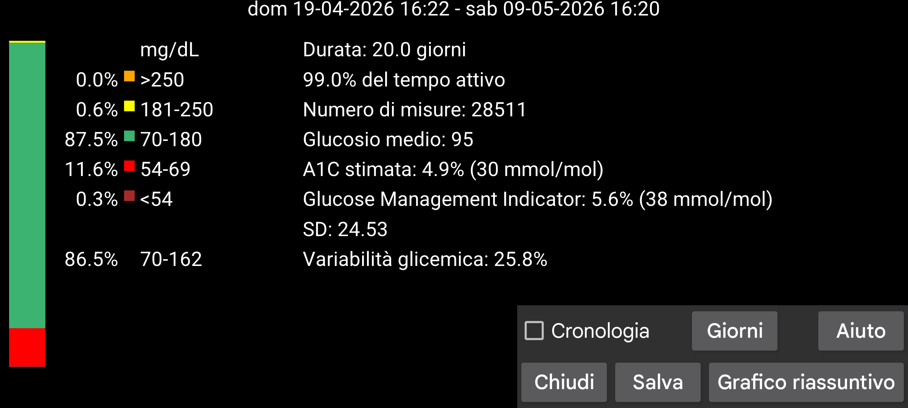
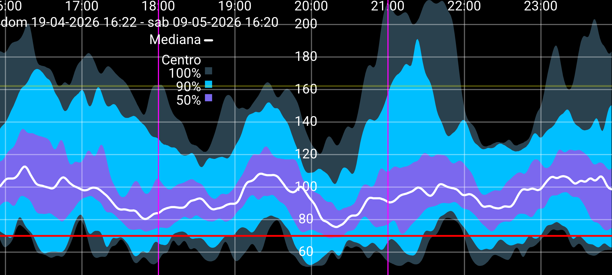

ar be de es fr hi it ja nl pl pt ru tr uk uz zh en
Alcune statistiche prese da AGP con alcune piccole modifiche.
Il numero di giorni analizzati può essere modificato premendo il pulsante Giorni. Il periodo termina al momento della posizione di fine schermo e si estende per il numero di giorni specificato a ritroso nel tempo. Tutti i dati sono basati solo sui valori del glucosio ricevuti ogni minuto tramite Bluetooth dal sensore (chiamato flusso in Juggluco).
Sulla sinistra dello schermo ci sono le percentuali di misurazioni che rientrano in determinati intervalli di glucosio. Gli intervalli standard sono sempre mostrati. Quando viene specificato un range target non standard in menu sinistro->Impostazione->Display, il tempo in quel range target è mostrato sotto gli intervalli standard.
La percentuale di tempo in cui Juggluco ha ricevuto valori del glucosio dal sensore.
Stima l'HbA1c dal glucosio medio usando una formula più vecchia (Nathan et al., 2008). Vedi https://professional.diabetes.org/diapro/glucose_calc per una calcolatrice.
È mostrata qui nel caso le persone stiano cercando il valore mostrato nell'app Libre 2 di Abbott. GMI è un sostituto del 2018 per questo indicatore.
Calcolato dal glucosio medio con una certa formula generalmente utilizzata (vedi https://www.jaeb.org/gmi/). È una predizione determinata empiricamente dell'HbA1c (chiamata anche A1c), data in percentuale e mmol/mol. Per me personalmente l'A1C stimata è un predittore migliore del GMI, ma il GMI è usato nell'app Libre 3 di Abbott.
Il coefficiente di variazione, %CV=(SD/media)*100%, come misura della variabilità glicemica. Un coefficiente di variazione più alto significa che i valori del glucosio sono più lontani dalla media.
Presenta un report dei tuoi valori del glucosio dei giorni specificati. Contiene statistiche, il grafico riassuntivo e un'immagine di giorni separati. Puoi stamparlo in PDF e inviarlo via e-mail al tuo professionista sanitario. Devi aver attivato menu sinistro→Impostazione→Scambio dati→Webserver. Apre l'url http://127.0.0.1:17580/x/report nel browser web.
(Mostrato solo quando sono disponibili almeno 9 giorni di valori del glucosio del flusso.)
Tutti i valori del glucosio del flusso in questo periodo vengono usati per disegnare un grafico composito che mostra per ogni minuto del giorno come erano distribuiti i valori del glucosio. La linea della mediana nera o bianca mostra il valore del glucosio al di sotto del quale si trovano il 50 percento dei valori del glucosio in ogni minuto del giorno. Il blu più chiaro è l'area in cui si trovano tutti i valori. Un blu un po' più scuro è l'area attorno alla mediana entro la quale si trova il 90% dei valori. Il blu più scuro è l'area attorno alla mediana del 50 percento dei valori. Se vedi i bordi delle aree come linee, puoi anche descriverli come segue: Sotto la linea più bassa ci sono lo 0% dei valori, sotto la seconda linea più bassa (tra il blu più chiaro e il blu medio scuro) il 5% dei valori, sotto la terza linea (tra il blu più scuro e il blu medio scuro) il 25% dei valori, sotto la linea nera il 50% dei valori. Seguito dal 75%, 95% e 100%.
Per ragioni estetiche, la curva è smussata con un filtro binomiale.
Tocca un punto qualsiasi dello schermo per chiudere il Grafico riassuntivo — tranne il bordo sinistro o destro, che muove il grafico avanti o indietro nel giorno. La curva può essere spostata avanti e indietro anche scorrendo. La scala temporale può essere modificata muovendo due dita l'una verso o lontano dall'altra.